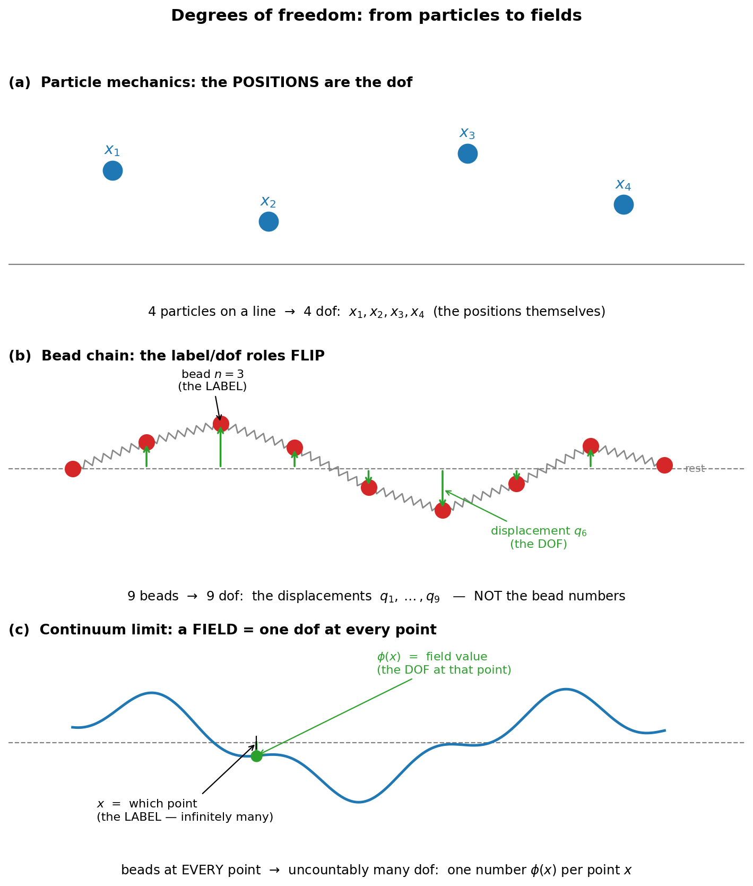
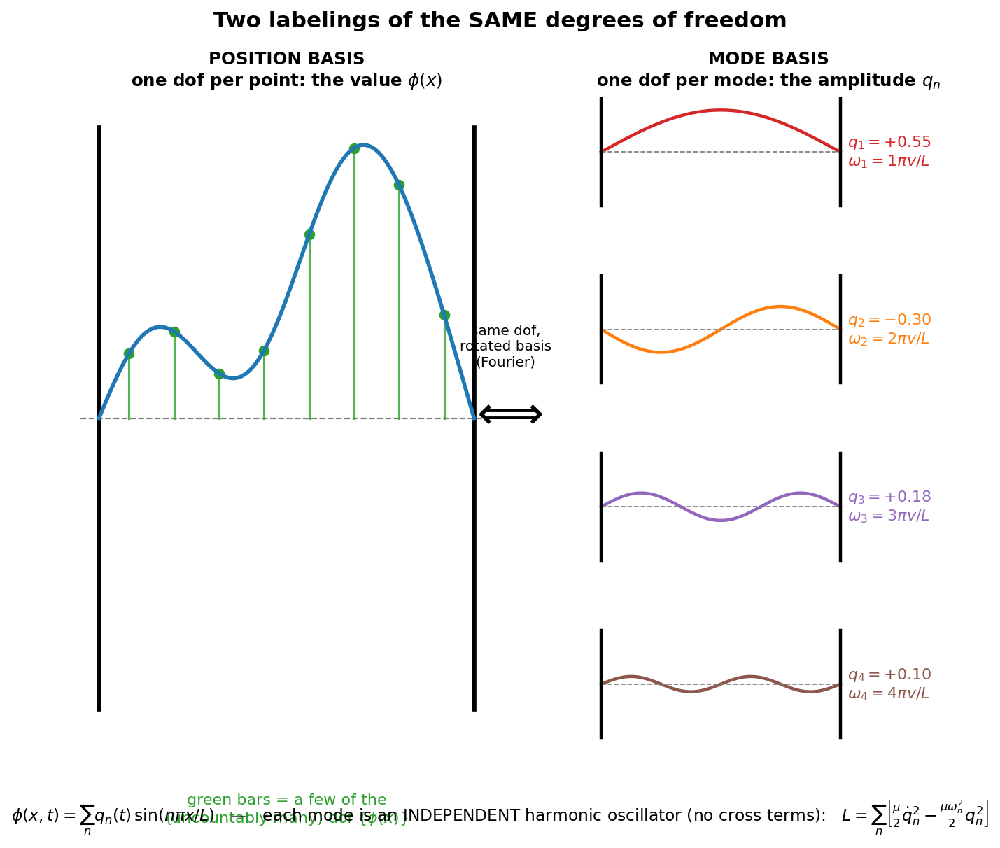
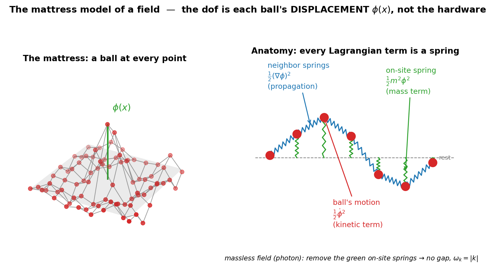
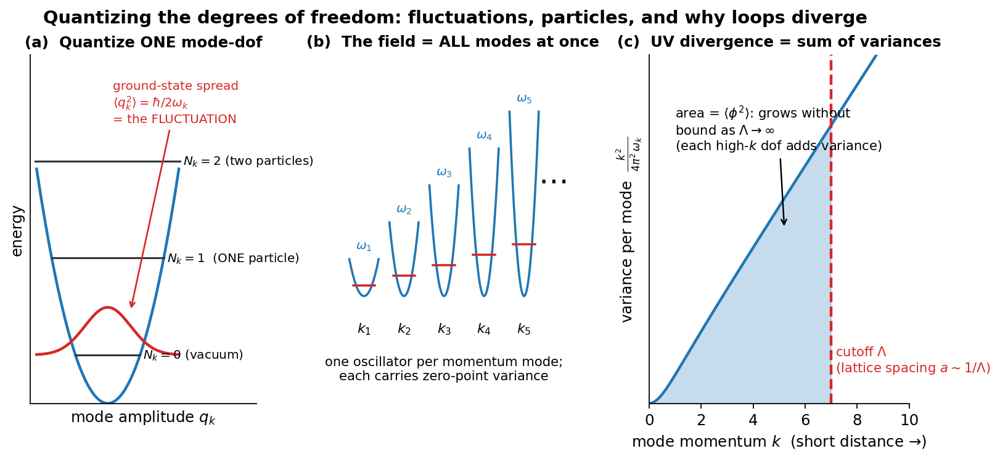
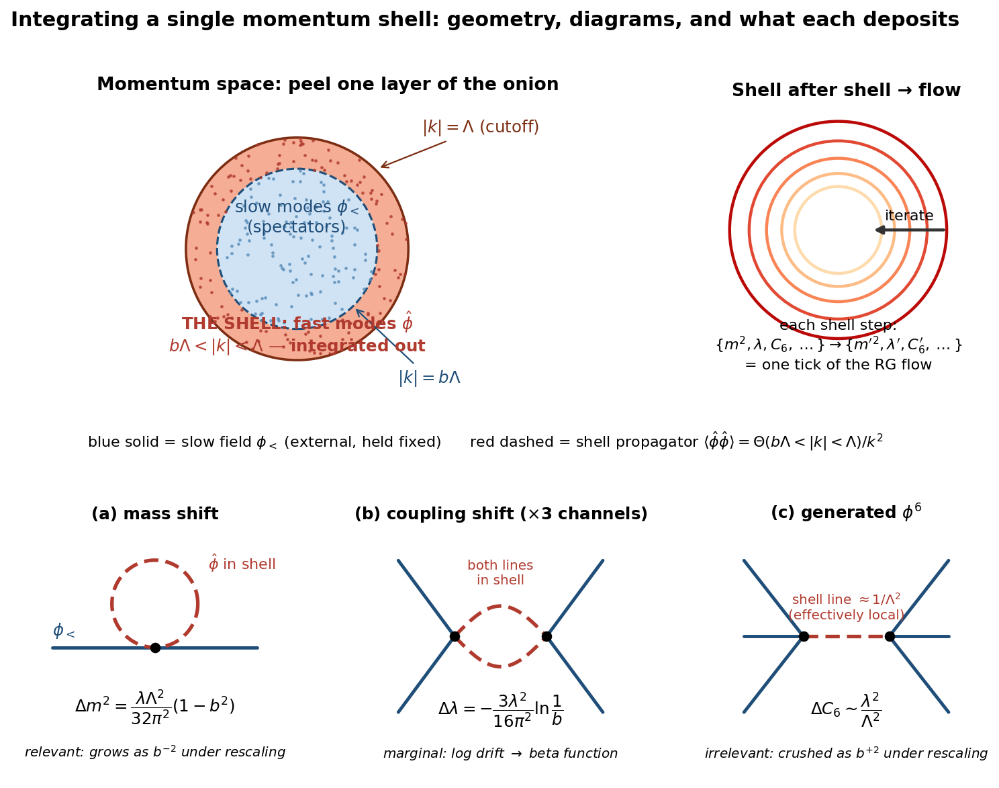
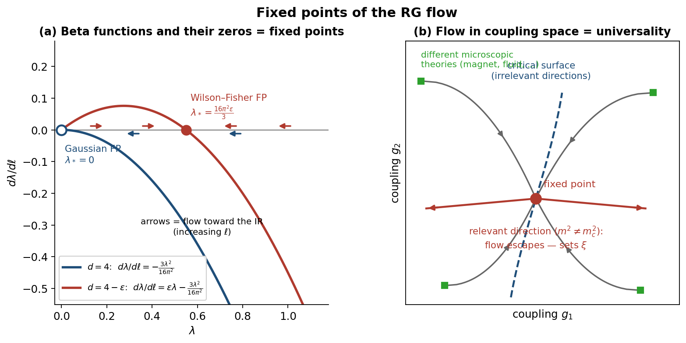
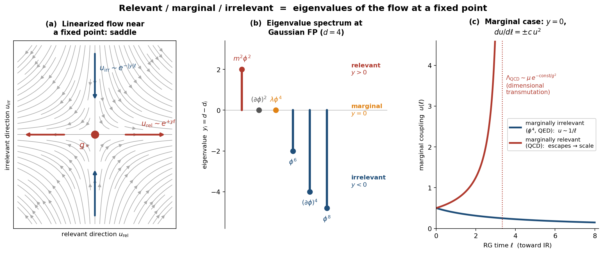
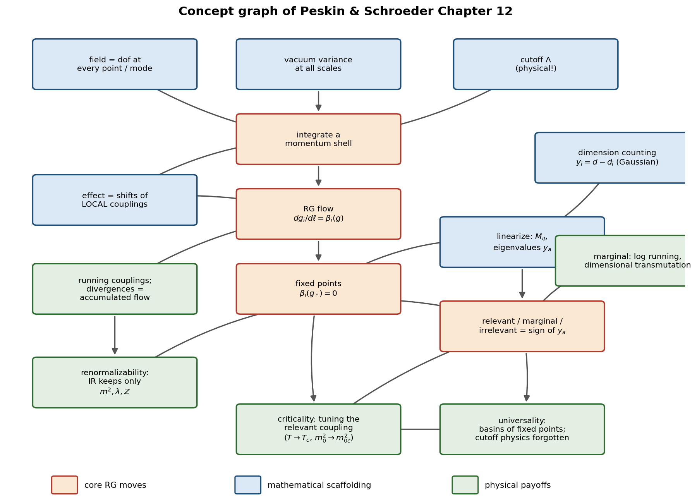

A Conceptual Companion
How to Read Chapter 12 of Peskin & Schroeder's Quantum Field Theory
An Introduction to Quantum Field Theory by Peskin and Schroeder is one of the standard textbooks on the subject. As a theorist, I have read Chapter 12 many times. In my view, it is a conceptually dense and wonderfully written chapter on renormalization and effective field theory — arguably the most rewarding chapter in the book, and certainly the one that repays rereading the most.
These are my personal study notes. By no means are they meant to replace standard textbook materials; rather, they represent my own attempts to unpack and understand the details of this chapter. In many places, the authors present the core of a concept in highly condensed sentences — a single paragraph carrying the entire modern understanding of what a quantum field theory is. I have tried to expand on these points, defining every concept the chapter silently assumes: degrees of freedom, quantum fluctuations, virtual particles, momentum shells, running couplings, fixed points, dimension counting — building each from the ground up so that the chapter can be read (and reread) with the vocabulary already in hand.
Decoding the Opening of Peskin & Schroeder, Chapter 12
The Renormalization Group: Why Short-Distance Physics Is Innocuous
Study notes — built from the ground up, assuming graduate-level QFT (Chapters 6–10 of P&S: loop diagrams, divergences, renormalized perturbation theory).
Part 0 — The Paragraph Itself (cleaned up)
"The cancellation of ultraviolet divergences is essential if a theory is to yield quantitative physical predictions. But, at a deep level, the fact that high-momentum virtual quanta can have so little effect on a theory is quite surprising. One of the essential features of quantum field theory is locality, that is, the fact that fields at different spacetime points are independent degrees of freedom with independent quantum fluctuations. The quantum fluctuations at arbitrarily short distances appear in Feynman diagram computations as virtual quanta with arbitrarily high momenta. In a renormalizable theory, the loop integrals over virtual-particle momenta are always dominated by values comparable to the finite external particle momenta. But why? It is not easy to understand how the quantum fluctuations associated with extremely short distances can be so innocuous as to affect a theory only through the values of a few of its parameters."
The job of this paragraph: reframe renormalization. In Ch. 10 it looked like a technical trick for subtracting infinities. Here Peskin says: the fact that the trick works is itself a deep physical mystery. The rest of Chapter 12 (Wilson's renormalization group) is the answer.
Part 0.5 — Prerequisite Concept: What "Degree of Freedom" Means
0.5.1 Classical mechanics: the original meaning
A degree of freedom (dof) is one independent number you must specify to fix the configuration of a system.
- Particle on a line: 1 dof (x). Particle in 3D: 3 dof. N particles in 3D: 3N dof.
- Rigid body: 3 (center position) + 3 (orientation) = 6 dof.
- The state needs each dof plus its momentum: phase space dimension = 2 × (#dof).
- Each dof is an independent knob — an independent way to move, store energy, and fluctuate.
0.5.2 Bridge: chain of N beads on springs
Bead n displaced by q_n(t) → N dof. Perspective shift: the dof are no longer positions of things, but values of a displacement labeled by which bead. Continuum limit: label n → continuous position x, and
$$q_n(t) \longrightarrow \phi(x, t)$$
0.5.3 Field theory: the roles of x and φ flip
$$\boxed In field theory, x is a label , not a dof. The dof is the field value } \phi(x) \text{ at each point.}}$$
| Particle mechanics | Field theory | |
|---|---|---|
| Label (index) | n = which particle | x = which point of space |
| Degree of freedom | x_n(t) | φ(x, t) |
| Number of dof | 3N, finite | one per point: uncountably infinite |
Scalar field: 1 dof per point. EM field: 2 physical dof per point (two polarizations, after gauge fixing). Specifying a field configuration = giving infinitely many numbers.

Figure 1 — (a) In particle mechanics the positions themselves are the dof. (b) In the bead chain the roles flip: the bead number n is only a label; the dof is the displacement q_n (green arrows). (c) Continuum limit: a field. The point x is the label (infinitely many of them); the dof is the value φ(x) at that point.
Consequence: in QFT, x is not an operator — it's a label; the operator is $\hat\phi$(x). (Major difference from single-particle QM, where $\hat{x}$ is an operator.)
0.5.4 Decoding Peskin's sentence
"Fields at different spacetime points are independent degrees of freedom with independent quantum fluctuations":
- degrees of freedom — φ(x$_{1}$), φ(x$_{2}$), ... are separate knobs, like separate beads.
- independent — the path-integral measure is Dφ = $\prod_x d\phi(x)$: the value at each point is integrated separately. (The action couples neighboring values via (∂φ)² — that's propagation — but coupled ≠ same dof; the beads were spring-coupled yet each was its own dof.)
- independent quantum fluctuations — quantize each dof → each gets its own ground-state variance (Part 1).
Why UV divergences exist at all: infinitely many dof with no shortest distance, each contributing zero-point variance ⇒ $\langle\phi^2\rangle$ = $\int d^3k/(2\pi)^3$ · 1/2ω_k diverges. Finite systems (N beads) never have UV divergences. The divergence IS the infinity of short-distance dof. Wilson's shell integration (Part 5) = "integrate over a batch of the dof and see what they leave behind."
0.5.5 Momentum-space repackaging
Fourier transform trades position-labeled dof for momentum-labeled ones:
$$\{\phi(x)\}_{\text{all } x} \;\longleftrightarrow\; \{\tilde\phi(k)\}_{\text{all } k}$$
Same dof, different labels. For the free theory the momentum-labeled dof decouple: each $\tilde\phi$(k) is an independent harmonic oscillator of frequency ω_k. Hence "a field = infinitely many oscillators." A cutoff Λ = keep only dof with |k| < Λ = finite density of dof per volume = what a lattice with spacing a ~ 1/Λ provides (back to the beads).
0.5.6 Mode counting: a vibrating string (equivalent labeling)
Two ways to count the dof of a string of length L, fixed ends, displacement φ(x,t):
Counting 1 (position basis): one dof per point x — the value φ(x).
Counting 2 (mode basis): expand in eigenmodes,
$$\phi(x,t) = \sum_{n=1}^{\infty} q_n(t)\,\sin\!\left(\frac{n\pi x}{L}\right)$$
→ one dof per mode: the amplitudes q$_{1}$, q$_{2}$, q$_{3}$, …
Same dof, different basis (a Fourier transform is a rotation in configuration space). Knowing all φ(x) $\Longleftrightarrow$ knowing all q_n.

Figure 2 — Left: one string shape, with a few of its position-basis dof marked (green bars = values φ(x)). Right: the SAME shape decomposed into eigenmodes; the mode-basis dof are the amplitudes q$_{1}$, q$_{2}$, q$_{3}$, q$_{4}$. The two descriptions are related by a Fourier rotation — nothing gained, nothing lost.
Why the mode basis is better: the Lagrangian decouples into independent oscillators —
$$L = \sum_n \left[\tfrac{\mu}{2}\dot{q}_n^2 - \tfrac{\mu\omega_n^2}{2} q_n^2\right],\qquad \omega_n = \frac{n\pi v}{L}$$
In the position basis, neighboring dof are coupled (the $(\partial_x\phi)^2$ term); in the mode basis, no cross terms. Mode n = one dof = one independent oscillator.
Quantize each mode: E = ħω_n(N_n + ½). - Even with all N_n = 0, each mode has $\langle q_n^2\rangle$ = ħ/2μω_n ≠ 0. Sum over infinitely many modes → the divergent $\langle\phi^2\rangle$ of Part 1. The UV divergence is the sum of zero-point spreads over infinitely many mode-dof. A real string truncates at the atomic spacing — the physical cutoff Λ. - Particles = excitation quanta of the modes: "one particle of momentum k" means "mode-oscillator k is in its first excited state, N_k = 1." String → phonons; EM field → photons; electron field → electrons. a_k†, a_k are the raising/lowering operators of oscillator k. This is the content of "particles are excitations of fields."

Figure 3 — (a) Quantizing a single mode-dof gives an oscillator ladder: the vacuum N_k = 0 already has a spread $\langle q_k^2\rangle$ = ħ/2ω_k (red curve) — the quantum fluctuation; the first rung N_k = 1 IS "one particle of momentum k." (b) The field is all such oscillators at once, one per mode. (c) Summing the zero-point variance over modes up to a cutoff Λ gives $\langle\phi^2\rangle$; it grows without bound as Λ → ∞ — the UV divergence is literally this sum over short-distance dof.
Dictionary:
| String | Quantum field |
|---|---|
| point x on the string | point x in space (label) |
| displacement φ(x) | field value φ(x) (the dof) |
| mode n, amplitude q_n | momentum mode k, amplitude $\tilde\phi$(k) |
| ω_n = nπv/L | ω_k = √(k² + m²) |
| phonon in mode n | particle with momentum k |
| zero-point spread of each mode | quantum fluctuation of each mode |
| atomic spacing cuts off high modes | cutoff Λ / lattice cuts off high k |
Rereading Peskin with this dictionary: "quantum fluctuations at arbitrarily short distances" = "zero-point spreads of the arbitrarily-high-n modes." Loop integrals sum over all of them; Wilson integrates out the high-mode batch first.
Basis fluency: "locality" statements use the position basis (independent points); "oscillators and particles" statements use the mode basis (independent modes). Both countings are correct; switching fluently between them is a core skill for Ch. 12.
0.5.7 The mattress model (mechanical picture of a field)
Picture: at every point of space sits a ball that can be displaced. Two kinds of springs:
- On-site spring anchoring each ball to its rest position → the mass term ½m²φ².
- Coupling springs to neighbors → the gradient term ½(∂φ)², which makes disturbances propagate as waves.
$$\mathcal{L} = \underbrace{\tfrac{1}{2}\dot\phi^2}_{\text{kinetic energy of balls}} - \underbrace{\tfrac{1}{2}(\nabla\phi)^2}_{\text{neighbor springs}} - \underbrace{\tfrac{1}{2}m^2\phi^2}_{\text{on-site springs}}$$

Figure 4 — Left: the mattress — a ball at every point of space, coupled to its neighbors; the green vertical bar is the displacement φ(x) of one ball, i.e. one dof. Right: side view mapping each piece of hardware to its Lagrangian term — ball motion → kinetic term, blue neighbor springs → gradient term (propagation), green on-site springs → mass term. Remove the on-site springs and you have a massless field (ω_k = |k|, no gap).
- Massless field (photon) = mattress with on-site springs removed → no gap (ω_k = |k|), long-range correlations. Massive field: correlations decay as e^{−m|x−y|} — the on-site spring stiffens the vacuum against long-wavelength displacements.
Precision point — what exactly is "the dof":
The dof is NOT the mass-spring hardware; it is the displacement of the ball, φ(x). The hardware (masses, spring constants) = the structure of the theory (the Lagrangian and its parameters m², λ). The point x = which ball (label). The displacement = the dof. One number per ball → one dof per point.
Caution: for real quantum fields there is no mechanical ball — φ is displacement in an abstract field-value space, not physical space. Taking the mattress literally is the 19th-century aether mistake; it is a mathematical isomorphism (same equations), not a claim about substance.
Everything becomes mechanical in this picture: - Normal modes of the mattress = momentum modes of the field (§0.5.6). - Quantized jiggle of each mode = quantum fluctuations (Part 1). - Phonon of the mattress = particle of the field (Part 2). - Real crystal has atomic spacing = lattice cutoff; the continuum has balls at every point → infinitely many dof → UV divergence. - Wilson = average over the fine fast wiggles and ask what effective mattress the long waves feel: a mattress with slightly shifted spring constants. That sentence IS the renormalization group (Part 5).
0.5.8 Self-test
- How many dof does a classical string of length L, fixed ends, have? → Infinitely many: one per point, equivalently one per mode sin(nπx/L).
- Is x an operator in QFT? → No; it's a label. $\hat\phi$(x) is the operator.
- Why does a lattice (spacing a) remove UV divergences? → Finitely many dof per volume; no modes with |k| $\gtrsim$ 1/a, so no short-distance variance to sum.
Part 1 — Prerequisite Concept: What "Quantum Fluctuation" Precisely Means
This word causes the most confusion, so we fix it first.
1.1 The wrong picture (kill it now)
- ✗ The field is NOT jiggling in time like a noisy classical signal.
- ✗ Particles are NOT popping into and out of existence in the vacuum.
- ✗ Nothing is "happening" in the vacuum at all.
1.2 The correct definition
A quantum fluctuation is a nonzero variance of an observable in a quantum state — even the ground state. It is a property of the state, not an event in time.
The harmonic oscillator prototype
In the ground state $|0\rangle$ of a harmonic oscillator:
$$\langle 0|\hat{x}|0\rangle = 0, \qquad \langle 0|\hat{x}^2|0\rangle = \frac{\hbar}{2m\omega} \neq 0$$
- Mean position: zero.
- Variance of position: nonzero.
- If you measure x, you get a spread of outcomes of width √(ħ/2mω).
- This spread is forced by [$\hat{x}$, $\hat{p}$] = iħ: a zero-variance state would need infinite energy.
That spread — nonzero variance in the lowest-energy state — is what "fluctuation" means. Nothing more.
Best mental analogy: the hydrogen atom
The electron cloud of the hydrogen ground state is not a movie of an electron whizzing around. It is the probability distribution of a position measurement, in a perfectly static, stationary state. $\langle$p$\rangle$ = 0 but $\langle$p²$\rangle$ ≠ 0, yet nobody says "momentum is constantly being created and destroyed."
A fluctuation is to the vacuum what the width of the electron cloud is to the hydrogen atom: a static uncertainty, not a happening.
1.3 The field version
A free quantum field is an infinite collection of harmonic oscillators — one for each momentum mode k, with frequency ω_k = √(k² + m²). In the vacuum:
$$\langle 0|\phi(x)|0\rangle = 0 \qquad\text{but}\qquad \langle 0|\phi(x)^2|0\rangle = \int \frac{d^3k}{(2\pi)^3}\,\frac{1}{2\omega_k} \;\neq\; 0$$
Read this carefully:
- The field's average value at any point is zero.
- Its variance is not — each mode contributes its zero-point spread 1/2ω_k.
- The integral diverges as k → ∞: the variance receives contributions from all modes, growing at high momenta. High k ↔ short distance (Δx ~ 1/k). This is Peskin's "fluctuations at arbitrarily short distances."
1.4 "Independent fluctuations at different points" = locality
The correlation between the field's random values at two points is the two-point function:
$$\langle 0|\phi(x)\phi(y)|0\rangle = D(x-y) \;\sim\; e^{-m|x-y|} \;\;\text{(spacelike)}$$
It decays with separation. So distant regions perform nearly independent "random draws." That is the operational meaning of locality: fields at different points are independent degrees of freedom with independent variances. (Contrast a nonlocal theory, where knowing φ here would pin down φ far away.)
1.5 The cleanest picture: the Euclidean path integral
$$Z = \int \mathcal{D}\phi\; e^{-S_E[\phi]}$$
- The vacuum is literally a probability distribution over classical field configurations, weighted by e^{−S_E}.
- The classical vacuum φ = 0 is merely the most probable configuration — the peak.
- Expectation values sample the whole distribution:
$$\langle\phi(x)\phi(y)\rangle = \frac{1}{Z}\int\mathcal{D}\phi\;\phi(x)\phi(y)\,e^{-S_E[\phi]}$$
Quantum fluctuations = the nonzero width of this distribution around the classical configuration.
When one writes φ = φ_cl + δφ and "integrates over fluctuations," δφ is exactly the deviation being summed over.
Bonus insight: Euclidean QFT in d dimensions ≡ classical statistical mechanics in d dimensions, with ħ ↔ temperature. Quantum fluctuations ↔ thermal fluctuations. Both mean: the system samples a neighborhood of the minimum, not just the minimum.
Reading rule: every time you see "quantum fluctuations," substitute "the variance of the field in the vacuum state" (equivalently, "the width of the path-integral distribution"). The sentence will always still parse correctly.
Part 2 — Prerequisite Concept: What a "Virtual Particle" Is (and Isn't)
2.1 The vacuum contains no particles. Period.
The vacuum is an eigenstate of the Hamiltonian:
$$\hat{H}|0\rangle = E_0|0\rangle \;\;\Rightarrow\;\; |0(t)\rangle = e^{-iE_0 t}|0\rangle$$
— it only acquires a phase; it is stationary. And the number operator gives
$$\hat{N}|0\rangle = 0 \quad\text{for all times, exactly.}$$
Measure particle number in the vacuum: you get zero, always, with zero variance. A state in which pairs "appear and disappear" would have time-varying particle number; the vacuum manifestly does not.
2.2 So what fluctuates, if not particle number?
The field operator does not commute with the number operator:
$$[\hat{N}, \hat{\phi}(x)] \neq 0$$
Therefore a state of definite particle number (the vacuum, N = 0) cannot have a definite field value — exactly as a definite-position state cannot have definite momentum. The nonzero variance $\langle\phi^2\rangle$ is this uncertainty-principle spread. It is variance frozen into the state, not dynamics.
2.3 Where "particles created and destroyed" language comes from
It is an artifact of a choice of basis and a perturbative expansion:
- $\hat\phi$ ~ Σ_k (a_k + a_k†), so any expression in φ contains creation/annihilation operators when written in the particle basis.
- The true interacting vacuum, expanded in free-particle states, has multi-particle components:
$$|\Omega\rangle = |0\rangle_{\text{free}} + \sum_n c_n\,|n\ \text{free particles}\rangle + \cdots$$
People then say "the vacuum contains virtual pairs" — but this describes the expansion coefficients, not events in time. Analogy: the hydrogen ground state expanded in free-electron plane waves is a superposition of many momenta; nobody claims free electrons are constantly created inside the atom.
2.4 Virtual particles = terms in a Taylor expansion
- An internal line in a Feynman diagram is a propagator $\langle\phi\phi\rangle$ — i.e., a piece of the field's variance.
- It carries k² ≠ m² (off-shell), which already tells you it is not a particle in the physical state (real particles are on-shell).
$$\boxed{\text{fluctuation of mode } k \;\;\Longleftrightarrow\;\; \text{internal line carrying momentum } k}$$
Position-space language ("fluctuations at short distances") and momentum-space language ("virtual quanta with high momenta") describe the same object, related by Fourier duality Δx ~ 1/k. A loop integral $\int$d$^{4}$k is literally the sum over the variances of all modes.
2.5 When ARE particles genuinely created?
Real creation requires an external disturbance — the state is not an eigenstate of the relevant Hamiltonian, and energy is supplied:
| Phenomenon | Disturbance | Output |
|---|---|---|
| Collider events (LHC) | Kinetic energy of colliding beams | Real, on-shell hadrons |
| Schwinger effect | Strong static E-field destabilizes QED vacuum | Real e$^{+}$e$^{-}$ pairs, rate ~ e^{−πm²/eE} |
| Hawking radiation | Horizon → observer-dependent vacuum | Real quanta escape |
| Cosmological production | Expanding spacetime → time-dependent H | Real quanta |
| Dynamical Casimir effect | Rapidly oscillating mirror | Real photons (measured 2011) |
Pattern: energy supplied externally, particles come out on-shell and detectable. In flat empty spacetime with time-independent H, the vacuum is stable and empty — guaranteed by its being the lowest eigenstate.
Part 3 — Sentence-by-Sentence Decode of the Paragraph
S1. "Cancellation of UV divergences is essential for quantitative predictions."
Review of Ch. 6–10: loops diverge at high k ("ultraviolet" = high momentum = short distance); renormalization absorbs the divergences into redefinitions of mass, coupling, field strength; only then can you compute finite numbers (e.g., the electron's anomalous magnetic moment).
S2. "But it is surprising that high-momentum virtual quanta have so little effect."
The pivot. Renormalization works — but why should it? The UV fluctuations end up mattering only through a handful of parameters. The next sentences explain why this is strange.
S3. "Locality: fields at different points are independent degrees of freedom with independent fluctuations."
The path integral $\int\mathcal{D}\phi$ = $\prod_x d\phi(x)$ integrates an independent variable at every point; equivalently $\prod_k d\tilde\phi(k)$ with k unbounded. The theory has structure at every length scale — no built-in shortest distance. (Precise meaning of "fluctuation": Part 1. Precise meaning of "independent": §1.4.)
S4. "Short-distance fluctuations appear as virtual quanta with arbitrarily high momenta."
Fourier dictionary Δx ~ 1/k. The region k → ∞ of a loop integral is the physics of infinitely fine-grained variance. Divergences are not a mathematical accident — they are the theory honestly reporting that it contains variance at every scale. (Precise meaning of "virtual quanta": Part 2.)
S5. "In a renormalizable theory, loop integrals are dominated by momenta comparable to external momenta."
After renormalization, physical answers behave as if the important virtual momenta were ~ the experiment's scale. Scatter electrons at 1 GeV → the answer is controlled by fluctuations around 1 GeV, not by physics at 10$^{15}$ GeV.
S6. "But why? How can short-distance fluctuations affect the theory only through a few parameters?"
The punchline. Locality says the theory teems with independent short-distance variance; naively, 1-GeV physics should depend in complicated detail on everything at shorter distances. In practice, all of it compresses into a few measured numbers (m, e, Z). Everything else about the deep UV is invisible. Why? → Wilson (Part 5).
The guiding analogy
Water is molecules doing wildly complicated things at 10$^{-10}$ m, yet hydrodynamics at everyday scales needs only a few numbers — density, viscosity — that summarize all molecular chaos. Renormalization says quantum fields work the same way. (Made precise in §5.5.)
Part 4 — The Mathematics: Setting Up the Puzzle
4.1 Locality → variance at all scales (restated in formulas)
Free two-point function:
$$\langle\phi(x)\phi(y)\rangle = \int\frac{d^4k}{(2\pi)^4}\,\frac{i\,e^{-ik(x-y)}}{k^2 - m^2 + i\epsilon}$$
The measure $\int\mathcal{D}\phi$ has no upper cutoff on k: independent quantum fluctuation at every scale.
4.2 Loops are UV-dominated — the surprise, quantified
One-loop self-energy in φ$^{4}$ theory with cutoff Λ:
$$-i\Sigma = \frac{-i\lambda}{2}\int\frac{d^4k}{(2\pi)^4}\frac{i}{k^2 - m^2}\;\sim\;\lambda\Lambda^2$$
Dominated by k ~ Λ — the shortest available distances. The vertex correction similarly gives λ² log(Λ²/p²). So naively, amplitudes at external momentum p depend violently on Λ. Peskin's worry is mathematically justified.
4.3 What renormalization actually achieves (the "how")
Subtract at the physical point:
$$\Sigma_R(p^2) = \Sigma(p^2) - \Sigma(m^2) - (p^2 - m^2)\,\Sigma'(m^2)$$
The subtracted integrand falls fast enough to converge, with support at k ~ p, m. Key structural fact: the divergent pieces are polynomials in external momenta of bounded degree — and polynomials in p are exactly what redefinitions of m², λ, Z can absorb (they correspond to local operators). BPHZ theorem: in a renormalizable theory, ALL UV sensitivity lives in a finite set of local counterterms.
But this is only the "how." The "why" needs Wilson.
Part 5 — Wilson's Answer: The Renormalization Group
5.1 Integrate out a momentum shell
Euclidean signature, hard cutoff |k| < Λ. Split slow/fast:
$$\phi = \phi_< + \phi_>,\qquad \phi_<: |k| < b\Lambda,\qquad \phi_>: b\Lambda < |k| < \Lambda,\qquad 0 < b < 1$$
Integrate out the fast modes exactly:
$$e^{-S_{\text{eff}}[\phi_<]} \;\equiv\; \int\mathcal{D}\phi_>\; e^{-S[\phi_< + \phi_>]}$$
Crucial point: S_eff is local on scales longer than 1/(bΛ), because the φ_> propagator decays like e^{−bΛ|x−y|}. So integrating out short-distance variance generates only local operators:
$$S_{\text{eff}} = \int d^4x\Big[\tfrac{1}{2}(1+\Delta Z)(\partial\phi_<)^2 + \tfrac{1}{2}(m^2+\Delta m^2)\phi_<^2 + \tfrac{\lambda+\Delta\lambda}{4!}\phi_<^4 + \Delta C\,\phi_<^6 + \Delta D\,(\partial\phi_<)^4 + \cdots\Big]$$
The short-distance fluctuations don't vanish — they are encoded into shifted coefficients of local operators. Then rescale (k′ = k/b, x′ = xb, φ′ = Z^{1/2}φ_<) so the cutoff returns to Λ, compare couplings, iterate. This defines a flow in coupling space.
5.2 Power counting: relevant, marginal, irrelevant
Under rescaling, a coupling g_i multiplying an operator of mass dimension d_i transforms (tree level, d = 4) as:
$$g_i \;\to\; b^{\,d_i - 4}\, g_i, \qquad b < 1,\ \text{iterated toward the IR}$$
| Class | Condition | Example (d=4 scalar) | Fate toward IR |
|---|---|---|---|
| Relevant | d_i < 4 | m²φ² (d=2): m² → b$^{-2}$m² | Grows |
| Marginal | d_i = 4 | (∂φ)², λφ$^{4}$ | Constant at tree level; logarithmic drift from loops |
| Irrelevant | d_i > 4 | φ$^{6}$ (d=6): C → b²C | Shrinks; effect on observables suppressed by (p/Λ)^{d_i−4} |
5.3 The theorem that answers "But why?"
Whatever wild physics exists at scale Λ — whatever values the infinitely many g_i(Λ) take — the flow to the IR crushes every irrelevant coupling toward a fixed trajectory. The IR theory is characterized by the finite set of relevant and marginal couplings alone.
For a scalar field in d = 4, that set is exactly: m², λ, and the field normalization Z — precisely the parameters you renormalized in Chapter 10. This is no coincidence:
$$\text{"renormalizable theory"} \;=\; \text{"theory containing only relevant and marginal operators"}$$
Numerical bite: suppose unknown Planck-scale physics generates (c/Λ²)φ$^{6}$ with c ~ 1. Its contribution to an amplitude at momentum p is ~ (p/Λ)². For p = 1 TeV and Λ = M_Pl ≈ 10$^{19}$ GeV: ~10$^{-32}$. That is the mathematical content of "innocuous."
5.4 Reconciling with the divergences of §4.2
- The quadratic divergence λΛ² in the mass = the statement that m² is relevant: each shell shifts it by Δm² ~ λΛ²(1−b²), so the IR mass is exquisitely sensitive to the UV starting point. (Flip side of the story: the hierarchy / fine-tuning problem.)
- The log divergence in λ = the marginal drift, which becomes the beta function:
$$\beta(\lambda) = \Lambda\frac{d\lambda}{d\Lambda} = \frac{3\lambda^2}{16\pi^2} + \cdots$$
- Nothing else diverges, because everything else is irrelevant.
Renormalization is not a trick for hiding infinities. It is the correct parametrization of a theory whose UV completion you don't know, in terms of the only couplings the IR can see.
5.5 The analogy, now precise
Hydrodynamics is the IR fixed-point description of molecular dynamics: viscosity and density are the relevant/marginal couplings; every molecular detail sits in irrelevant operators suppressed by powers of (observation scale / molecular scale).
Part 5A — "Integrating a Single Momentum Shell": Meaning + Explicit One-Loop Computation
5A.1 What the phrase means
The dof of the field fill a ball of radius Λ in (Euclidean) momentum space. A shell is its outermost thin layer:
$$b\Lambda < |k| < \Lambda,\qquad b\lesssim 1$$
— the onion's peel: the highest-momentum ⇔ shortest-wavelength modes currently in the theory (the fastest, finest wiggles of the mattress).
Integrating the shell = performing the path integral over ONLY those dof, with all slower modes held fixed as spectators:
$$e^{-S_{\text{eff}}[\phi_<]} \equiv \int\mathcal{D}\hat\phi\; e^{-S[\phi_<+\hat\phi]}$$
Key points: - Exactness: Z = $\int\mathcal{D}\phi_<\,e^{-S_{\rm eff}}$ exactly — Fubini, since φ_< and $\hat\phi$ are distinct dof (disjoint momentum support). Long-wavelength correlators are unchanged; you've merely done part of the integral early. - What's lost: only the ability to ask questions about the shell modes — they're averaged, not deleted. Their entire effect survives inside the shifted couplings. - Why a thin shell, not the whole ball: (a) each step is a finite, convergent integral (floor bΛ, ceiling Λ — the scary $\int_0^\infty$ never appears); (b) corrections per step ~ λ ln(1/b) are small, so perturbation theory is valid at every step even when the accumulated change λ ln(Λ/p) is large ("RG improvement"); (c) iterating shells turns the procedure into a flow; with infinitesimal shells b = e^{−d$\ell$}, the discrete map becomes dg_i/d$\ell$ = β_i(g) — beta functions ARE "change in coupling per shell of modes integrated out." - Not the mass shell! k² = m² (dispersion of real particles) is an unrelated use of "shell."

Figure 5 — Top: momentum space with the shell highlighted (red = fast dof $\hat\phi$ being integrated, blue = slow spectators φ_<); iterating shell steps generates the RG flow. Bottom: the three one-loop diagrams and what each deposits into S_eff — (a) the tadpole shifts m² (relevant), (b) the fish shifts λ (marginal, → beta function), (c) two 3+1 vertices joined by one shell line generate φ$^{6}$ (irrelevant). Blue solid lines = φ_<; red dashed = shell propagator Θ(bΛ<|k|<Λ)/k².
5A.2 Setup for the explicit computation (d = 4)
$$S=\int d^4x\left[\tfrac12(\partial\phi)^2+\tfrac12 m^2\phi^2+\tfrac{\lambda}{4!}\phi^4\right],\qquad \phi=\phi_<+\hat\phi$$
The interaction expands (binomial coefficients ÷ 4!):
$$\frac{\lambda}{4!}(\phi_<+\hat\phi)^4=\frac{\lambda}{4!}\phi_<^4+\frac{\lambda}{3!}\phi_<^3\hat\phi+\frac{\lambda}{4}\phi_<^2\hat\phi^2+\frac{\lambda}{3!}\phi_<\hat\phi^3+\frac{\lambda}{4!}\hat\phi^4$$
Shell propagator (m² dropped against k² ~ Λ² inside the shell):
$$\langle\hat\phi(k)\hat\phi(-k)\rangle=\frac{1}{k^2}\,\Theta(b\Lambda<|k|<\Lambda)$$
Master shell integral (Ω$_{4}$ = 2π² for the unit 3-sphere):
$$\int_{\text{shell}}\frac{d^4k}{(2\pi)^4}f(|k|)=\frac{1}{8\pi^2}\int_{b\Lambda}^{\Lambda}k^3 f(k)\,dk$$
5A.3 Step 1 — Mass shift (tadpole: one vertex, one shell loop)
First cumulant of (λ/4)φ_<²$\hat\phi$², contracting the $\hat\phi$ pair:
$$\Delta S=\frac{\lambda}{4}\int d^4x\,\phi_<^2\,\langle\hat\phi^2\rangle=\frac12\left[\frac{\lambda}{2}\int_{\text{shell}}\frac{d^4k}{(2\pi)^4}\frac{1}{k^2}\right]\phi_<^2$$
$$\boxed{\;\Delta m^2=\frac{\lambda}{2}\cdot\frac{1}{8\pi^2}\int_{b\Lambda}^{\Lambda}k\,dk=\frac{\lambda\Lambda^2}{32\pi^2}(1-b^2)\;}$$
Finite; quadratic in Λ (shell version of the quadratic divergence); momentum-independent (pure φ_<², no kinetic piece).
5A.4 Step 2 — Coupling shift (fish: two vertices, two shell lines)
Second cumulant, two (λ/4)φ_<²$\hat\phi$² insertions, $\hat\phi$'s contracted across (2 ways), 3 channels (s,t,u) each with symmetry factor ½, external momenta ≪ bΛ so the diagram is local:
$$\boxed{\;\Delta\lambda=-\frac{3\lambda^2}{2}\int_{\text{shell}}\frac{d^4k}{(2\pi)^4}\frac{1}{(k^2)^2}=-\frac{3\lambda^2}{2}\cdot\frac{1}{8\pi^2}\ln\frac1b=-\frac{3\lambda^2}{16\pi^2}\ln\frac1b\;}$$
Logarithmic in the shell — the marginal signature; small per step, accumulating to ln(Λ/p) over many steps.
5A.5 Step 3 — ΔZ = 0 at one loop
The only one-loop quadratic contribution (Step 1) is momentum-independent → kinetic term untouched. Field-strength renormalization first appears at two loops (sunset), matching Ch. 10.
5A.6 Step 4 — A generated irrelevant operator: φ$^{6}$
Contract one $\hat\phi$ from each of two (λ/3!)φ_<³$\hat\phi$ terms:
$$\Delta C_6\sim\frac{\lambda^2}{\Lambda^2}$$
The internal shell line has |k| ~ Λ, so 1/k² ≈ 1/Λ² up to (external p)²/Λ² corrections (which are yet-higher-derivative, even more irrelevant operators). This is locality of S_eff made concrete: the shell propagator has no long-distance tail.
5A.7 Step 5 — Rescale: the recursion relations
k′ = k/b, x′ = bx, φ′ = b^{(2−d)/2}φ_< = b^{−1}φ_< (d = 4; no Z correction at this order):
$$m'^2=b^{-2}\left[m^2+\frac{\lambda\Lambda^2}{32\pi^2}(1-b^2)\right]\qquad\text{(relevant: blows up)}$$
$$\lambda'=\lambda-\frac{3\lambda^2}{16\pi^2}\ln\frac1b\qquad\text{(marginal: log drift)}$$
$$C_6'=b^{2}\left[C_6+\#\frac{\lambda^2}{\Lambda^2}\right]\qquad\text{(irrelevant: crushed toward }\sim\lambda^2/\Lambda^2\text{, whatever its initial value)}$$
The C$_{6}$ line IS the answer to the chapter's opening paragraph — computed, not asserted: the IR forgets the initial value of every irrelevant coupling.
5A.8 Step 6 — Continuum limit: the flow equations
Infinitesimal shells b = e^{−d$\ell$} ($\ell$ → IR), using 1 − b² ≈ 2d$\ell$, ln(1/b) = d$\ell$:
$$\frac{dm^2}{d\ell}=2m^2+\frac{\lambda\Lambda^2}{16\pi^2},\qquad \frac{d\lambda}{d\ell}=-\frac{3\lambda^2}{16\pi^2},\qquad \frac{dC_6}{d\ell}=+2C_6+\cdots$$
- The λ equation = the Wilsonian beta function; identical to Callan–Symanzik β(λ) = +3λ²/16π² of §12.2 after flipping to μ d/dμ (UV direction).
- Solution: λ($\ell$) = λ$_{0}$ / (1 + 3λ$_{0}$$\ell$/16π²). φ$^{4}$ is IR-free (coupling shrinks toward long distances; run backwards → Landau pole in the UV).
- m² = λ = C_i = 0 is a fixed point (Gaussian). The relevant/marginal/irrelevant classification = the linearization of the flow around it.
- In d = 4 − ε: dλ/d$\ell$ = ελ − 3λ²/16π², new zero at λ = 16π²ε/3 — the Wilson–Fisher fixed point*, the door to critical phenomena at the end of the chapter.
5A.9 Paraphrases (pick your favorite)
- Onion: peel momentum space a layer at a time; each layer leaves its fingerprint as a slight change in the recipe (couplings) for what remains.
- Mattress: freeze the slow undulations; average the fast fine jitter; ask what effective mattress the slow waves feel → same mattress, slightly shifted spring constants, plus tiny new (irrelevant) spring types.
- Statistics: coarse-graining — a Kadanoff block-spin step in momentum space; marginalize the fine variables of a probability distribution.
- Photography: slightly lower the resolution, then ask what camera settings would have directly produced the blurrier image.
Part 5B — Wilson's Theory in One Sentence (and its Three Qualifiers)
5B.1 The core statement, symbolically
Integrated-out degrees of freedom do not disappear; their entire effect is absorbed into adjusted coupling constants of the effective action.
$$\int\mathcal{D}\hat\phi\; e^{-S[\phi_<+\hat\phi]} \;=\; e^{-S_{\text{eff}}[\phi_<]},\qquad S_{\text{eff}}=\sum_i g_i'\,\mathcal{O}_i[\phi_<],\qquad g_i'=g_i+\Delta g_i$$
Nothing is lost — Z is exactly preserved:
$$Z=\int\mathcal{D}\phi\,e^{-S[\phi]}=\int\mathcal{D}\phi_<\,e^{-S_{\text{eff}}[\phi_<]}$$
The information changes address: from explicit dof in the measure to values of couplings multiplying local operators.
5B.2 Qualifier 1 — absorbed into couplings of LOCAL operators
A priori, integrating out modes could generate nonlocal junk:
$$\phi_<(x)\,K(x-y)\,\phi_<(y),\qquad K \text{ long-ranged?}$$
It does not, because the shell propagator has no long-distance tail:
$$\langle\hat\phi(x)\hat\phi(y)\rangle\;\sim\;e^{-b\Lambda|x-y|}\quad\Longrightarrow\quad K(x-y)\approx\Big[c_0+c_2\,\partial^2+c_4\,\partial^4+\cdots\Big]\delta^4(x-y)$$
— a delta function plus derivative corrections, i.e. a sum of local operators. (Seen concretely in the φ$^{6}$ diagram: the internal shell line was ≈ 1/Λ², a number → pointlike vertex.) Fast dof, seen from far away, are indistinguishable from local modifications of the theory. Without this, "adjusting couplings" would not even be a meaningful operation.
5B.3 Qualifier 2 — absorbed into INFINITELY MANY couplings, of which only a few matter
The shell shifts every operator allowed by symmetry:
$$S_{\text{eff}}=\int d^4x\Big[\tfrac{Z'}{2}(\partial\phi)^2+\tfrac{m'^2}{2}\phi^2+\tfrac{\lambda'}{4!}\phi^4+C_6'\phi^6+C_{\partial4}'(\partial\phi)^4+\cdots\Big]$$
The statement is rescued from hopelessness by power counting:
$$g_i \to b^{\,d_i-4}g_i:\qquad d_i<4\ \text{grows},\quad d_i=4\ \text{drifts},\quad d_i>4\ \text{dies as }(p/\Lambda)^{d_i-4}$$
Absorption without power counting explains nothing; power counting without absorption has nothing to count. Together: only m², λ, Z survive to the IR = renormalizability.
5B.4 Qualifier 3 — absorbed SCALE BY SCALE: couplings become functions of scale
Iterating the shell step promotes each constant to a running function:
$$\lambda\;\longrightarrow\;\lambda(\ell),\qquad \frac{d\lambda}{d\ell}=\beta(\lambda)$$
A coupling is not a fixed number but a running summary of all fluctuations above the current observation scale. "What is λ?" is meaningless without "at which scale?" — just as "what is the viscosity?" implicitly fixes an observation scale.
5B.5 The complete one-sentence Wilson theory
Integrating out short-distance dof deposits their entire effect into shifted couplings of local operators; iterating this makes the couplings flow with scale; and power counting guarantees that toward long distances the flow forgets all but a finite set of relevant and marginal couplings.
5B.6 The philosophical inversion + two caveats
Inversion: before Wilson, the cutoff was an embarrassment (send Λ → ∞, cure the divergences). After Wilson, the cutoff is physical: every QFT is an effective theory below some scale, its couplings silently encoding the unknown dof above. The measured e and m_e of QED are the deposit left by all the physics we have never seen.
Caveat 1 — irrelevant ≠ zero: suppressed by (p/Λ)^{d_i−4}, not absent. Measuring these tiny fingerprints is how low-energy experiments probe high scales (precision searches for deviations from the Standard Model = searches for irrelevant operators).
Caveat 2 — the flip side: relevant couplings absorb the UV too well: m² shifts by ~ λΛ² per unit flow, so a small IR mass requires exquisite UV cancellation — the fine-tuning / hierarchy problem.
Part 5C — Divergences = Accumulated Flow (the Punchline)
5C.1 The refinement
Once the flow picture is adopted, there are no divergences left to absorb. Every shell step was finite:
$$\Delta m^2=\frac{\lambda\Lambda^2}{32\pi^2}(1-b^2),\qquad \Delta\lambda=-\frac{3\lambda^2}{16\pi^2}\ln\frac1b\qquad\text{(small, controlled)}$$
Where did Ch. 10's divergences go? They are the accumulated flow. Compose many shells from Λ down to a physical scale p:
$$\lambda(p)\;\approx\;\lambda(\Lambda)\;-\;\frac{3\lambda^2}{16\pi^2}\underbrace{\ln\frac{\Lambda}{p}}_{\textstyle\sum d\ell}$$
There is the "log divergence" of the one-loop vertex — reborn as the integrated drift of a marginal coupling over many finite steps. Likewise the "quadratic divergence" λΛ² of the self-energy = the accumulated b$^{-2}$ growth of the relevant coupling m².
Old language: the coupling absorbs a divergence. Wilson's language: the coupling flows with scale; the "divergence" was the flow between two widely separated scales — Λ → ∞ merely makes the flow interval infinitely long.
A divergence is not a disease: it is a log or power of a scale ratio, mislabeled as infinity because the old formalism tried to jump the ratio in one step instead of flowing through it gradually.
5C.2 The complete dictionary
$$\frac{dg_i}{d\ell}=\beta_i(g)$$
| Coupling type | Flow behavior | Old-language "divergence" |
|---|---|---|
| Relevant (m²) | power-law growth ~ b$^{-2}$ per step | quadratic divergence Λ² |
| Marginal (λ, e) | logarithmic drift, β ~ g² | log divergence ln Λ |
| Irrelevant (C$_{6}$, …) | flows toward a fixed value, forgetting its start | no divergence — the "innocuous" ones |
The divergence structure of perturbation theory (which operators need counterterms, of what degree) is the flow structure (which couplings are relevant/marginal). Ch. 10's power counting of divergences and Ch. 12's power counting of operators are the same computation.
5C.3 The flow is physically real
- QED: α ≈ 1/137 at low energy but ≈ 1/127 at the Z mass (~91 GeV) — probing shorter distances penetrates the screening cloud of fluctuations, revealing more charge. Measured.
- QCD: β < 0, the coupling shrinks at short distance — asymptotic freedom — quarks nearly free inside a proton yet unextractable.
Both are the shell-by-shell adjustment of couplings, happening in nature, not in bookkeeping.
5C.4 Where the flow can and cannot be trusted
Solving dλ/d$\ell$ = −3λ²/16π² toward the UV:
$$\lambda(\mu)=\frac{\lambda_0}{1-\frac{3\lambda_0}{16\pi^2}\ln(\mu/\mu_0)}\;\longrightarrow\;\infty\ \text{at finite }\mu\quad\text{(Landau pole)}$$
Read correctly: not a prediction of infinity, but an announcement that the theory demands new degrees of freedom before that scale — the effective description has flowed outside its domain. Conversely, flows can terminate at fixed points, β(g*) = 0 → scale invariance:
- Gaussian fixed point (m² = λ = 0);
- Wilson–Fisher fixed point (d = 4 − ε, λ = 16π²ε/3), governing critical phenomena — where the flow's forgetting of irrelevant details explains universality*: a magnet and a boiling fluid share identical critical exponents.
5C.5 The full statement, assembled
Integrating out short-distance dof deposits their effect into local couplings → iterating makes those couplings flow with scale → the old "divergences" are the accumulated flow of the relevant and marginal couplings between widely separated scales, while irrelevant couplings flow to oblivion — which is simultaneously why the theory is renormalizable and why the UV is innocuous.
That is the entire conceptual content of Chapter 12. What remains in the text is technique: the Callan–Symanzik equation (§12.2) is this flow derived in continuum language; solving it (§12.3) yields the running-coupling formulas above.
Part 5D — The Critical-Point Analogy (decoding §12.1's magnet paragraph)
5D.1 The paragraph (cleaned up)
"However, we saw in Chapter 8 that there is one circumstance in which the correlations of the spin field are much longer than the atomic spacing [so that $m \ll \Lambda$]... just in the vicinity of the critical point, the spins become correlated over arbitrarily long distances as the fluctuating spins attempt to choose their eventual direction of magnetization. To study these long-range correlations in a magnet, one must carefully adjust the temperature to bring the system into the vicinity of the phase transition. In the same way, we can imagine making a fine adjustment of the parameters of $\phi^4$ theory to bring the quantum field theory into a region of parameters where we find correlations of the field $\phi(x)$ over distances much larger than $1/\Lambda$."
5D.2 Context: the generic problem
Ch. 8 dictionary: Euclidean $\phi^4$ ≡ Landau–Ginzburg magnet; spin field $s(x) \leftrightarrow \phi(x)$; atomic spacing $a \leftrightarrow 1/\Lambda$ (in a magnet the cutoff is literally the crystal lattice — undeniably physical). Generic magnet: $\langle s(x)s(0)\rangle \sim e^{-|x|/\xi}$ with $\xi \sim$ a few $a$. Translated: $\xi = 1/m$, so $\xi \sim a$ means $m \sim \Lambda$ — the "particle" is as heavy as the cutoff, and NOTHING propagates beyond a lattice spacing. A generic theory has no long-distance physics at all.
5D.3 The exception: criticality
Near $T = T_c$ the correlation length diverges:
$$\xi \propto |T - T_c|^{-\nu} \to \infty$$
Mechanism: at the transition the system is "deciding" between disorder ($\langle s\rangle = 0$) and magnetization ($\langle s\rangle \neq 0$): huge patches of temporarily aligned spins form, dissolve, and reform at EVERY size scale. Exactly at $T_c$, exponential decay becomes a scale-free power law:
$$\langle s(x)s(0)\rangle \sim \frac{1}{|x|^{d-2+\eta}}$$
($\eta = 2\gamma$ at the fixed point — the stat-mech face of the anomalous dimension of §12.2–12.3.) And since $\xi \sim a|t|^{-\nu}$, a large $\xi/a$ requires tuning $t = (T-T_c)/T_c$ very delicately — long correlations never happen by accident.
5D.4 The QFT translation, sentence by sentence
The knob analogous to temperature is the bare mass — the relevant coupling. From the shell computation:
$$m^2_{\text{phys}} = m_0^2 + \#\,\lambda\Lambda^2 + \cdots$$
Both terms are individually $O(\Lambda^2)$; to get $m_{\text{phys}} \ll \Lambda$ (light particle, correlations $\gg 1/\Lambda$), tune $m_0^2$ toward a critical value $m_{0,c}^2$:
$$m_0^2 - m_{0,c}^2 \;\longleftrightarrow\; T - T_c,\qquad \frac{1}{m_{\text{phys}}} = \xi \to \infty$$
5D.5 The bomb, stated plainly
A continuum quantum field theory — particles light compared to the cutoff — IS a statistical system fine-tuned to sit near its critical point. Renormalizing a QFT and tuning a magnet to $T_c$ are the same operation.
| Magnet | $\phi^4$ quantum field theory |
|---|---|
| spin field $s(x)$ | field $\phi(x)$ |
| atomic spacing $a$ | $1/\Lambda$ |
| temperature deviation $T - T_c$ | relevant-coupling deviation $m_0^2 - m_{0,c}^2$ |
| correlation length $\xi$ | Compton wavelength $1/m_{\text{phys}}$ |
| $\langle s(x)s(0)\rangle \sim e^{-r/\xi}$ | propagator $\sim e^{-mr}$ |
| exactly critical, $\xi = \infty$ | massless theory |
| magnetized phase, $\langle s\rangle \neq 0$ | spontaneous symmetry breaking ($m^2 < 0$) |
| critical exponent $\eta$ | anomalous dimension $2\gamma$ |
| exponent $\nu$ | running of the mass operator (§12.5) |
5D.6 Why Peskin plants this paragraph here
- It legitimizes the cutoff: in the magnet, $\Lambda = 1/a$ is physical (atoms exist) — retroactively justifying the Wilsonian stance for QFT.
- It prices the "fine adjustment": the mass flows as $dm^2/d\ell = 2m^2 + \lambda\Lambda^2/16\pi^2$, amplifying deviations; a small IR mass means starting exquisitely close to the critical surface. In particle physics this is the hierarchy problem: "why is the Higgs light?" = "why is nature tuned so near a critical point?"
- It sets up universality: different microscopic magnets flow to the SAME long-distance behavior (all irrelevant details forgotten). Read backwards: the continuum QFT obtained by tuning is insensitive to cutoff-scale physics — the third answer, via statistical mechanics, to the chapter's opening "But why?"

Figure 6 — (a) Beta functions of $\phi^4$: in $d=4$ (blue) the only zero is the Gaussian fixed point and the coupling flows to zero in the IR; in $d = 4-\epsilon$ (red) a new zero appears — the Wilson–Fisher fixed point — attracting the IR flow. (b) Flow in coupling space: different microscopic systems (green squares: a magnet, a fluid, a lattice model...) flow along irrelevant directions onto the critical surface and into the fixed point — universality; the relevant direction ($m^2 \neq m_c^2$, i.e. $T \neq T_c$) carries the flow away and sets the correlation length.
Part 5E — Mass Dimension Counting (the foolproof algorithm)
Everything in mass dimension, natural units $\hbar = c = 1$: $[\text{mass}] = [\text{energy}] = [\text{momentum}] = +1$, $[\text{length}] = [\text{time}] = -1$. Notation: $[X]$ = mass dimension of $X$.
5E.1 The four steps
Step 1 — Anchor: the action is dimensionless. $S = \int d^dx\,\mathcal{L}$ appears in $e^{iS}$, so $[S] = 0$; with $[d^dx] = -d$:
$$[\mathcal{L}] = d \qquad (= 4 \text{ in four dimensions})$$
Step 2 — Fix field dimensions from kinetic terms (no adjustable coupling there), using $[\partial_\mu] = +1$:
$$\tfrac12(\partial\phi)^2:\; 2[\phi]+2=d \Rightarrow \boxed{[\phi]=\tfrac{d-2}{2}}\;(=1)$$
$$i\bar\psi\gamma^\mu\partial_\mu\psi:\; 2[\psi]+1=d \Rightarrow \boxed{[\psi]=\tfrac{d-1}{2}}\;(=\tfrac32)$$
$$-\tfrac14 F_{\mu\nu}F^{\mu\nu},\ F=\partial A:\; 2([A]+1)=d \Rightarrow \boxed{[A_\mu]=\tfrac{d-2}{2}}\;(=1)$$
Step 3 — Coupling dimension = $d$ minus the rest of its term:
$$[g] = d - \big(\text{sum of dims of fields and derivatives in the term}\big) = d - d_i$$
Step 4 — The sign of $[g]$ decides everything:
$$[g]>0:\ \text{super-renormalizable (relevant)}\quad [g]=0:\ \text{renormalizable (marginal)}\quad [g]<0:\ \text{non-renormalizable (irrelevant)}$$
Since $[g_i] = d - d_i$, this is exactly the $d_i \lessgtr d$ test of Part 5 — Ch. 10's renormalizability criterion and Ch. 12's power counting are the same inequality.
5E.2 Worked table ($d = 4$)
| Term | Count | $[g]$ | Verdict |
|---|---|---|---|
| $m^2\phi^2$ | $4-2(1)$ | $+2$ | relevant |
| $g\phi^3$ | $4-3(1)$ | $+1$ | super-renormalizable |
| $\lambda\phi^4$ | $4-4(1)$ | $0$ | marginal |
| $C\phi^6$ | $4-6(1)$ | $-2$ | irrelevant |
| $y\,\bar\psi\psi\phi$ (Yukawa) | $4-(\tfrac32+\tfrac32+1)$ | $0$ | renormalizable |
| $e\,\bar\psi\gamma^\mu\psi A_\mu$ (QED) | $4-(\tfrac32+\tfrac32+1)$ | $0$ | renormalizable |
| $G_F(\bar\psi\psi)^2$ (Fermi) | $4-4(\tfrac32)$ | $-2$ | non-renormalizable |
| gravity: $\mathcal{L}\sim\tfrac1{G_N}R$, $[R]=2$ | — | $[G_N]=-2$ | non-renormalizable |
Physics in the last rows: $[G_F] = -2$ means $G_F \sim 1/M^2$ — and indeed $G_F \simeq 1/(294\,\text{GeV})^2$, correctly predicting new dof (the $W$) near that scale. A negative-dimension coupling is a theory announcing its own expiration date — the Wilsonian reading of an irrelevant operator as the fingerprint of heavier physics. $[G_N] = -2$ points the same finger at the Planck scale.
5E.3 Why the sign of $[g]$ decides divergences
An amputated amplitude with $E$ external $\phi$ legs has fixed dimension ($d=4$): $[\mathcal{M}] = 4 - E$. If a diagram carries vertices of total coupling dimension $\sum_v [g_v]$, the loop integral supplies the difference, so its superficial degree of divergence ($\text{diagram} \sim \Lambda^D$) is
$$D = 4 - E - \sum_v [g_v]$$
Read the trichotomy from this one formula: - $[g] < 0$: every insertion RAISES $D$ → at high enough order every amplitude, any $E$, diverges → infinitely many counterterms → non-renormalizable. - $[g] = 0$: $D = 4 - E$, independent of order → only the fixed finite family $E \le 4$ ever diverges → finitely many counterterms → renormalizable. - $[g] > 0$: insertions LOWER $D$ → only finitely many diagrams diverge at all → super-renormalizable.
This is Wilson's $(p/\Lambda)^{d_i-4}$ suppression written as UV counting instead of IR flow.
5E.4 Mistake checklist (tape next to the vocabulary card)
- $[S]=0$ therefore $[\mathcal{L}] = d$, not 0.
- $[\partial_\mu]=+1$; $[d^dx]=-d$; $[d^dk]=+d$.
- $[\delta^{(d)}(x)]=+d$ but $[\delta^{(d)}(p)]=-d$ (each delta cancels its measure).
- Field dimensions depend on $d$: in $d=4-\epsilon$, $[\psi]=\tfrac{3-\epsilon}{2}$ and $[\lambda_{\phi^4}] = 4-d = \epsilon \neq 0$ — the engine of the $\epsilon$-expansion.
- Momentum-space propagators: scalar $-2$ (from $1/k^2$), fermion $-1$ (from $1/k\!\!/$).
- Dimensionless and often forgotten to be: $\hbar$, $c$, angles, $\gamma^\mu$, group generators, the argument of any exponential.
- The criterion uses the coupling's dimension (not the field's), and it is the sign that matters, not the value.
5E.5 When is a perturbation "increasingly important at low momenta"? (decoding Peskin's dimensional-analysis paragraph)
"An operator with mass dimension $d_i$ has a coefficient with dimension $(\text{mass})^{d-d_i}$. The natural order of magnitude for this mass is the cutoff $\Lambda$. Thus, if $d_i < d$, the perturbation is increasingly important at low momenta. On the other hand, if $d_i > d$, the relative size of this term decreases as $(p/\Lambda)^{d_i-d}$ as $p \to 0$; thus the term is truly irrelevant."
Step 1 — the coefficient's natural size. A perturbation $\Delta\mathcal{L} = C_i\,\mathcal{O}_i$ has $[C_i] = d - d_i$; the only scale available to build it from is the cutoff:
$$C_i \sim \Lambda^{\,d-d_i}\times O(1)$$
(verified by the shell computation: $\Delta C_6 \sim \lambda^2/\Lambda^2$).
Step 2 — "important" means the dimensionless ratio at the experiment's scale. Only dimensionless ratios can be large or small. At experiment momentum $p$, the operator enters through
$$\boxed{\;\text{relative importance} \;\sim\; C_i\,p^{\,d_i-d} \;\sim\; \left(\frac{\Lambda}{p}\right)^{d-d_i}\;}$$
Read off the two cases:
- $d_i < d$ (relevant): increasingly important as $p \to 0$. Exponent $d-d_i>0$, so the ratio $(\Lambda/p)^{d-d_i}$ blows up at low momenta. Concrete check — the mass term in $1/(p^2+m^2)$: it competes through $m^2/p^2$, negligible for $p\gg m$, totally dominant for $p\ll m$ (gaps the theory, kills propagation). The lower the momentum, the more the term dominates.
- $d_i > d$ (irrelevant): fades as $p \to 0$. Importance $\sim (p/\Lambda)^{d_i-d} \to 0$. The dimensionful coefficient is a fixed number, but measured in the experiment's units it shrinks without limit — "truly irrelevant."
Step 3 — this IS the tree-level flow. The dimensionless coupling $\hat g_i(p) = C_i\,p^{d_i-d}$ obeys
$$\hat g_i(p) = \hat g_i(\Lambda)\left(\frac{p}{\Lambda}\right)^{d_i-d}$$
— identical to iterating the Wilson step $g_i \to b^{d_i-d}g_i$ from $\Lambda$ down to $p$. Near the free fixed point, the flow is dimensional analysis; the loop corrections (anomalous dimensions) are precisely what this shortcut cannot see, which is why it holds "near the free-field fixed point."
Subtlety. "Increasingly important" does NOT mean $C_i$ changes — it is fixed once at the cutoff. What grows is its importance relative to the probing scale: the dimensionless measure $C_i\,p^{d_i-d}$. (A 1-meter bump is "increasingly important" as the vehicles driving over it shrink; the bump is constant, the comparison changes.) "The coupling grows toward the IR" and "the fixed term matters more at low momenta" are two bookkeepings of one fact.
Where the names come from. This is the sentence that justifies the terminology: $d_i < d$ is called relevant because it is relevant to low-energy experiments — the only ones we can do; $d_i > d$ is irrelevant because low-energy physics can barely feel it, whatever its cutoff-scale coefficient. The classification is IR-anchored: operators graded by their importance where we live, $p \ll \Lambda$.
Part 5F — Relevant / Marginal / Irrelevant: the Eigenvalue Picture (the general theory)
Everything in Parts 5 and 5E was a special case of one dynamical-systems statement. This is the deep version of Peskin's classification discussion.
5F.1 Move 1 — The RG is a vector field on the space of theories
A theory = a point $g = (g_1, g_2, g_3, \ldots)$ in the infinite-dimensional space of all couplings. The shell step defines a flow:
$$\frac{dg_i}{d\ell} = \beta_i(g)$$
All the chapter's structure is the qualitative theory of this dynamical system.
5F.2 Move 2 — Linearize around a fixed point
At $g^*$ with $\beta_i(g^*) = 0$, write $g_i = g_i^* + \delta g_i$:
$$\frac{d\,\delta g_i}{d\ell} = \sum_j M_{ij}\,\delta g_j + O(\delta g^2),\qquad M_{ij} = \frac{\partial\beta_i}{\partial g_j}\bigg|_{g^*}$$
Diagonalizing $M$ gives special coupling combinations — the scaling variables $u_a$ — that evolve independently, each with its eigenvalue $y_a$:
$$\frac{du_a}{d\ell} = y_a u_a \;\Longrightarrow\; u_a(\ell) = u_a(0)\,e^{y_a\ell} = u_a(0)\, s^{y_a}\quad (s = e^{\ell} = \text{scale factor})$$
"How the coefficient grows under the RG" is exactly this: perturb the fixed point by a small $u_a$, and the flow amplifies or crushes it as a power of the length scale.
5F.3 Move 3 — The classification IS the sign of the eigenvalue
$$y_a>0:\ \textbf{relevant (grows toward IR)}\qquad y_a<0:\ \textbf{irrelevant (dies)}\qquad y_a=0:\ \textbf{marginal (2nd order decides)}$$

Figure 7 — (a) Linearized flow near a fixed point: the eigen-directions decouple; relevant directions carry the flow out ($e^{+y\ell}$), irrelevant ones carry it in ($e^{-|y|\ell}$) — a saddle. (b) The eigenvalue spectrum at the Gaussian fixed point in $d=4$ is just dimension counting, $y_i = d - d_i$. (c) The marginal case: at second order $du/d\ell = \pm c\,u^2$ gives logarithmic flows — marginally irrelevant couplings decay as $1/\ell$; marginally relevant ones escape and manufacture a scale (dimensional transmutation).
5F.4 Move 4 — Dimension counting was the special case
At the Gaussian fixed point the eigen-operators are the ordinary local operators, and
$$y_i = d - d_i$$
— which is why Part 5E's counting worked: $m^2\phi^2 \to y=2$; $\lambda\phi^4$ ($d=4$) $\to y=0$; $\phi^6 \to y=-2$. At an interacting fixed point, operator dimensions shift by anomalous dimensions:
$$\Delta_i = d_i + \gamma_i(g^*),\qquad y_i = d - \Delta_i \neq d - d_i$$
The classification depends on the fixed point. Cleanest example, from the chapter itself: in $d = 4-\epsilon$,
$$\beta(\lambda) = \epsilon\lambda - \frac{3\lambda^2}{16\pi^2}$$
Linearize at the two zeros: at the Gaussian point, $y_\lambda = +\epsilon$ (relevant); at Wilson–Fisher $\lambda_* = 16\pi^2\epsilon/3$, $y_\lambda = \beta'(\lambda_*) = \epsilon - \frac{6\lambda_*}{16\pi^2}\cdot\frac{16\pi^2}{16\pi^2}$... explicitly $\beta'(\lambda_*) = \epsilon - 2\epsilon = -\epsilon$ (irrelevant). Same operator, two verdicts. "Relevant" is a property of an operator AT a fixed point, not of the operator alone.
5F.5 The geometry: critical surface, tuning count, universality
- Critical surface = span of the irrelevant eigendirections = the basin of attraction: start anywhere on it, flow into $g^*$ (Figure 6b).
- Number of relevant directions = number of knobs to tune to reach criticality. Ising magnet: two ($T$ and external field $h$; one if symmetry sets $h=0$) — this is why lab critical points are reachable at all. QFT at the Gaussian point in $d=4$: the sole relevant direction is the mass — one tuning, and it IS the hierarchy problem.
- Universality class = the set of all microscopic theories in the same basin. They share every long-distance exponent because the fixed point, not the starting point, controls the IR.
5F.6 The marginal case in detail: log flows and dimensional transmutation
With $y = 0$, second order decides:
$$\frac{du}{d\ell} = c\,u^2$$
- Marginally irrelevant (flows back to the FP): $\phi^4$ in $d=4$, QED. Solution $u(\ell) \sim \dfrac{1}{|c|\,\ell}$ — approach only logarithmically slow, the origin of the famous logarithmic corrections in $d=4$.
- Marginally relevant (escapes): the QCD coupling toward the IR. Integrating $du/u^2 = c\,d\ell$ generates a scale from a dimensionless coupling:
$$\Lambda_{\rm QCD} \sim \mu\, e^{-\,{\rm const}/g^2(\mu)}$$
Dimensional transmutation: pure logarithmic running manufactures a mass scale (essentially the proton mass) out of nothing dimensionful — arguably the most dramatic consequence of "marginal."
5F.7 UV ↔ IR duality of stability
A direction relevant toward the IR is attractive when the flow is run backwards toward the UV, and vice versa. Consequences:
- A genuine continuum limit ($\Lambda \to \infty$) requires the reversed flow to land on a fixed point: the Gaussian one (asymptotic freedom, QCD) or an interacting one (the asymptotic safety scenario).
- Renormalizability, in flow language: the theory lives on a UV fixed point's finite-dimensional unstable manifold — finitely many relevant/marginal directions = finitely many parameters = predictive theory.
5F.8 The chapter, as one concept graph

Figure 8 — How every idea of Chapter 12 hangs together: from the dof/fluctuation/cutoff foundations, through the shell step and the flow, to fixed points, their eigenvalues, and the classification — and out to the physical payoffs: running couplings and divergences-as-flow, renormalizability, criticality-by-tuning, universality, and dimensional transmutation.
Part 5G — The Three Classes of Quantum Field Theory (decoding Peskin's §12.3 taxonomy)
5G.1 Convention warning (read first!)
Peskin's §12.2–12.3 use the Callan–Symanzik convention $\beta = \mu\frac{d\lambda}{d\mu}$ — flow toward the UV (increasing $\mu$). Our Wilsonian notes used $\frac{d\lambda}{d\ell}$ — flow toward the IR. They are opposite signs:
$$\beta_{\text{Peskin}} > 0 \;\;\Longleftrightarrow\;\; \frac{d\lambda}{d\ell} < 0 \;\;(\text{coupling shrinks toward IR})$$
Keep this translation in mind for every sign statement below. The physics is identical; the labeling of "which way is positive" flips.
Also: "the leading coefficient in this power series" — at small coupling $\beta(\lambda) = a\lambda^2 + b\lambda^3 + \cdots$; the sign of $a$ (one-loop, computable) decides the class, since higher terms are negligible at weak coupling.
5G.2 The paragraph (cleaned up)
"Three behaviors are possible in the region of small $\lambda$: (1) $\beta(\lambda) > 0$; (2) $\beta(\lambda) = 0$; (3) $\beta(\lambda) < 0$. Examples of quantum fields are known that exhibit each of these behaviors."
Peskin then discusses each class. Here is the full decode.
5G.3 Class 1: $\beta > 0$ — IR-free theories ($\phi^4$, QED)
"The running coupling goes to zero in the infrared, leading to definite predictions about small-momentum behavior."
Toward low momenta the coupling shrinks — perturbation theory gets better the further into the IR you go. Feynman diagrams are asymptotically exact at long distances. This is why QED at atomic energies is the most precisely verified theory in science: you compute in the regime where the coupling is dying.
"The running coupling becomes large at high momenta... short-distance behavior cannot be computed."
Run the same flow backwards (toward UV): the coupling grows, and perturbation theory — the only tool that defined the theory — eventually quits.
"Formally goes to infinity at a large but finite value of the momentum."
The Landau pole: from $\lambda(\mu) = \frac{\lambda_0}{1 - \frac{a\lambda_0}{2}\ln(\mu/\mu_0)}$, the denominator vanishes at finite $\mu$. "Formally" carries weight: perturbation theory broke before the pole, so the infinity is an extrapolation, not a prediction — but it signals real trouble.
"Not even clear that these theories possess a nontrivial $\Lambda \to \infty$ limit."
The triviality problem: try to remove the cutoff — to keep any fixed nonzero coupling at low energy, the bare coupling at $\Lambda$ must grow without bound as $\Lambda$ increases, hitting the pole. The only consistent $\Lambda \to \infty$ limit forces $\lambda_{\rm IR} \to 0$: the theory becomes free — "trivial." In flow language (Part 5F.7): the reversed flow has no UV fixed point to land on.
Conclusion: $\phi^4$ and QED can only exist as effective theories with a physical cutoff — Wilson's worldview made mandatory, not optional. (For QED the pole is at $\sim 10^{286}$ eV; nobody loses sleep. But as a matter of principle the theory is incomplete.)
"Feynman diagram analysis is useful if one is mainly interested in large-distance or macroscopic behavior... Chapter 13... statistical mechanics of systems with critical points."
The silver lining and the pivot of the book: for critical phenomena you only care about the IR — precisely where these theories are computable. The "defect" (IR freedom) becomes the tool: it is what makes the $\epsilon$-expansion of Ch. 13 work.
5G.4 Class 2: $\beta = 0$ — finite theories
"The coupling does not flow... running coupling equal to the bare coupling."
The marginal coupling stays exactly marginal to all orders: no drift, no logs. The theory is genuinely scale-invariant at each coupling value — a whole line of fixed points, parameterized by $\lambda$.
"No ultraviolet divergences in the relation of coupling constants. The only possible UV divergences are field rescaling, which cancel in S-matrix elements."
Decoded via Part 5C: divergences = accumulated flow. No flow $\Rightarrow$ no divergences in couplings. Field-normalization $Z$ can still diverge (anomalous dimension), but $Z$-factors drop out of physical $S$-matrix elements by the LSZ construction — so nothing physical diverges at all. Such theories are called finite quantum field theories.
"Before the emergence of our modern understanding... these would have been embraced as the solution to the problem of ultraviolet infinities."
A historical jab: in the 1950s, when infinities were viewed as a disease, a finite theory would have looked like a holy grail. Post-Wilson, the reaction is a shrug — divergences were never a disease (just flow), so their absence is a curiosity, not salvation.
"The known finite field theories in four dimensions are very special constructions — gauge theories with extended supersymmetry — with no known physical application."
The flagship: $\mathcal{N}=4$ super Yang–Mills, whose beta function vanishes identically, enforced by maximal supersymmetry. Nature doesn't use it. (Though "no known physical application" has aged interestingly: $\mathcal{N}=4$ SYM later became the central object of the AdS/CFT correspondence — not physical, but arguably the most studied QFT in existence.)
5G.5 Class 3: $\beta < 0$ — asymptotically free theories (QCD)
The mirror image of class 1, with UV and IR exchanged:
Coupling goes to zero in the UV — perturbation theory is exact at short distances. The $\Lambda \to \infty$ limit exists: the reversed flow lands on the Gaussian fixed point. These are the only conventional $d=4$ theories that can be genuinely fundamental (cutoff removable) rather than effective.
The coupling grows toward the IR until perturbation theory fails — for QCD, at $\Lambda_{\rm QCD} \sim 200$ MeV, the dimensional-transmutation scale of Part 5F.6. Below it: confinement, hadrons, the nonperturbative world.
The physical example is the theory of the strong interactions — QCD — and the discovery that non-abelian gauge theories have $\beta < 0$ (Gross, Wilczek, Politzer, 1973) is what made QCD the accepted theory of quarks. Peskin proves this sign in Ch. 16.
5G.6 The taxonomy in one table
| Class 1: $\beta>0$ | Class 2: $\beta=0$ | Class 3: $\beta<0$ | |
|---|---|---|---|
| IR behavior | free, computable | fixed coupling | strong, nonperturbative |
| UV behavior | Landau pole, strong | fixed coupling | free, computable |
| $\Lambda\to\infty$? | probably not (triviality) | yes (line of FPs) | yes (asymptotic freedom) |
| Divergences | full flow | none physical | full flow |
| Examples | $\phi^4$, QED | $\mathcal{N}=4$ SYM | QCD, Yang–Mills |
| Role in book | Ch. 13 (critical phenomena) | curiosity | Ch. 16–17 (strong interactions) |
Note the symmetry: classes 1 and 3 are the same physics with UV ↔ IR exchanged. Each is computable at one end and strongly coupled at the other; each is useful exactly at its free end. Class 2 is the knife-edge between them.
The paragraph also doubles as a map of the rest of the book: class 1 → Chapter 13 (exploit IR freedom for critical exponents), class 3 → Chapters 16–17 (QCD, asymptotic freedom, confinement).
Part 6 — The Whole Story on One Page
- Locality ⇒ the vacuum has field-value variance at every wavelength (Part 1), with no built-in shortest distance.
- In perturbation theory, that variance at wavelength 1/k appears as internal propagator lines carrying momentum k ("virtual quanta" — Part 2). Loop integrals $\int$d$^{4}$k sum the variance over all modes.
- The high-k variance is enormous — the raw integrals diverge (§4.2). Naively, low-energy physics should depend in detail on unknown short-distance physics.
- Yet after renormalization, all UV sensitivity collapses into polynomials in external momenta = a few local counterterms (§4.3).
- Wilson explains why: integrate out the high-k modes shell by shell. Locality guarantees the result is again a local action; power counting shows all but a finite set of relevant + marginal couplings shrink toward the IR like (p/Λ)^{d_i−4} (§5.2–5.3).
- Therefore low-energy physics depends on the deep UV only through the values of a few parameters — exactly Peskin's sentence, now a theorem instead of a mystery.
- Residue of the mystery: relevant couplings (m²) are hypersensitive to the UV — the hierarchy problem.
Part 7 — Vocabulary Card (keep this)
| Phrase in the text | Precise translation |
|---|---|
| Small / short distance | High momentum, high energy, ultraviolet (UV), near the cutoff ($k \sim \Lambda$), fine-grained. Fourier duality $p \sim 1/x$; probing distance $x$ requires momentum $\gtrsim 1/x$ (uncertainty principle) — so "probing small distances" = "doing high-momentum experiments." |
| Large / long distance | Low momentum, low energy, infrared (IR), far below the cutoff ($p \ll \Lambda$), coarse-grained. Always relative to $1/\Lambda$, never absolute: if $\Lambda \sim M_{\rm Pl}$, a femtometer is already an enormous distance — all of particle physics is "long-distance physics" in the Wilsonian view. |
| Long-distance behavior | The IR endpoint of the flow: the couplings after flowing $\ell \to$ large = what experiments at $p \ll \Lambda$ measure. "Integrating out short distances" and "integrating out high momenta" are the same integral (shell propagator $\sim e^{-b\Lambda\lvert x-y\rvert}$ ↔ restriction $b\Lambda < \lvert k\rvert < \Lambda$). |
| Correlations over distances $\gg 1/\Lambda$ | $\langle\phi(x)\phi(y)\rangle$ sizable for $\lvert x-y\rvert \gg 1/\Lambda$, i.e. $\xi = 1/m \gg 1/\Lambda$, i.e. $m \ll \Lambda$: a light particle. One statement in three dialects. |
| Degree of freedom | One independent number needed to specify the configuration. In field theory: the field value φ(x); the point x is only a label, not a dof. A field = uncountably many dof, one per point (equivalently, one oscillator per momentum mode). |
| Mode | One dof in the momentum/eigenmode basis — an independent harmonic oscillator of frequency ω_k. Same dof as the position labeling, rotated basis. A particle of momentum k = the first excited state of mode k. |
| Mattress model | Ball at every point; on-site springs = mass term ½m²φ², neighbor springs = gradient term ½(∂φ)². The dof is each ball's displacement, not the hardware. Intuition device, not substance (no aether). |
| Momentum shell | The thin layer bΛ < |
| Running coupling | A coupling promoted to a function of scale, λ($\ell$), obeying dλ/d$\ell$ = β(λ): the running summary of all fluctuations above the current observation scale. "What is λ?" is incomplete without "at which scale?". |
| Divergence (Wilsonian reading) | The accumulated flow of a relevant (power of Λ) or marginal (ln Λ) coupling between two widely separated scales — a scale ratio mislabeled as infinity. Each individual shell step is finite. |
| Landau pole | Scale at which a running coupling formally blows up; announces that the effective theory demands new dof before that scale, not a physical infinity. |
| Fixed point | β(g*) = 0: scale-invariant theory. Gaussian (free) and Wilson–Fisher (d = 4 − ε) are the chapter's examples; forgetting of irrelevant details near a fixed point = universality of critical phenomena. |
| Mass dimension [X] | Power of mass carried by X in ħ = c = 1 units. Anchor: [S] = 0 ⇒ [$\mathcal{L}$] = d. From kinetic terms: [φ] = (d−2)/2, [ψ] = (d−1)/2, [A] = (d−2)/2. Coupling: [g] = d − d_i. |
| Super-/non-renormalizable | Sign of the coupling dimension: [g] > 0 super-renormalizable (relevant, finitely many divergent diagrams); [g] = 0 renormalizable (marginal, finitely many counterterm types); [g] < 0 non-renormalizable (irrelevant, divergences proliferate with order; coupling ~ 1/M^{ |
| Superficial degree of divergence D | Diagram ~ Λ^D with D = 4 − E − Σ[g_v] (d = 4, scalar legs): the dimensional bookkeeping linking coupling dimensions to UV behavior. |
| Critical point | Knife-edge parameter value (T = T_c; m$_{0}$² = m$_{0}$c²) where the correlation length diverges and correlations become scale-free power laws. Continuum QFT = statistical system tuned near its critical point. |
| Correlation length ξ | Distance over which fluctuations are correlated: $\langle$s s$\rangle$ ~ e^{−r/ξ}. QFT translation: ξ = 1/m_phys. Generic theories have ξ ~ 1/Λ (no long-distance physics); tuning the relevant coupling makes ξ ≫ 1/Λ. |
| Universality | Different microscopic systems flow to the same fixed point, sharing identical long-distance behavior/critical exponents — and, read backwards, why continuum QFT is insensitive to unknown cutoff-scale physics. |
| Scaling variable / eigenvalue y | Eigen-combination of couplings under the linearized flow at a fixed point: u($\ell$) = u(0)e^{y$\ell$} = u(0)s^y. Sign of y defines the classification; at the Gaussian FP, y_i = d − d_i (dimension counting); at interacting FPs, y_i = d − Δ_i with Δ_i = d_i + γ_i. |
| Critical surface | Span of the irrelevant eigendirections = basin of attraction of a fixed point; number of relevant directions = number of experimental knobs to tune to reach criticality. |
| Marginally relevant / irrelevant | y = 0 cases resolved at second order, du/d$\ell$ = ±cu²: logarithmic escape (QCD) or logarithmic decay (φ$^{4}$, QED). |
| Dimensional transmutation | A marginally relevant coupling's log running generating a mass scale from a dimensionless coupling: Λ_QCD ~ μ e^{−const/g²}. |
| Asymptotic freedom / safety | Continuum limit Λ → ∞ requires the UV-directed flow to land on a fixed point: Gaussian (asymptotic freedom) or interacting (asymptotic safety). |
| β > 0 (IR-free / class 1) | Coupling dies in the IR (perturbation theory works at long distances) but blows up in the UV (Landau pole; triviality problem; Λ → ∞ probably impossible). Examples: φ$^{4}$, QED. Tool for critical phenomena (Ch. 13). Convention: Peskin's β = μ dλ/dμ, toward UV; Wilsonian dλ/d$\ell$ toward IR has opposite sign. |
| β = 0 (finite / class 2) | Coupling exactly constant at all scales; no divergences in physical quantities. Extremely special: known examples require extended supersymmetry (e.g. N=4 SYM). |
| β < 0 (asymptotically free / class 3) | Coupling dies in the UV (perturbation theory works at short distances; Λ → ∞ limit exists) but grows in the IR (confinement, nonperturbative). Example: QCD. The only conventional d=4 theories that can be fundamental rather than effective. |
| Triviality problem | For β > 0 theories, the only consistent Λ → ∞ limit forces the IR coupling to zero (free theory). The reversed flow has no UV fixed point to land on — the theory can only exist as an effective theory with a physical cutoff. |
| Landau pole | Scale at which a running coupling formally blows up; announces that the effective theory demands new dof before that scale, not a physical infinity. |
| Quantum fluctuation | Nonzero variance of the field in the vacuum state; width of the path-integral distribution around the classical configuration. NOT an event. |
| Fluctuations at short distances | Variance contributed by high-momentum modes (Δx ~ 1/k). |
| Virtual quantum / virtual particle | An internal propagator line = one term in the perturbative expansion of the field's variance. Off-shell (k² ≠ m²); not a particle in the state. |
| Independent fluctuations (locality) | $\langle\phi(x)\phi(y)\rangle$ decays with separation; distant regions make independent random draws. |
| Renormalizable theory | A theory containing only relevant and marginal operators. |
| Innocuous UV fluctuations | Irrelevant-operator effects suppressed by (p/Λ)^{d_i−4}. |
| UV divergences | The RG flow of the relevant (power-law) and marginal (logarithmic) couplings — and nothing else. |
| Real particle creation | Requires external disturbance/energy (collisions, Schwinger, Hawking, dynamical Casimir); output is on-shell and detectable. Never happens in the undisturbed vacuum. |
Part 8 — Where This Goes in the Book
- §12.1: Wilson's shell integration for φ$^{4}$, done explicitly (roughly Eqs. 12.5–12.28); operator classification near Eq. 12.27.
- §12.2–12.3: Callan–Symanzik equation and running couplings — the continuum, perturbative version of the same flow.
- Suggested next step: carry out the one-loop shell integration yourself — compute Δm², Δλ, ΔZ from diagrams with φ_> in the loop — to make the flow concrete.